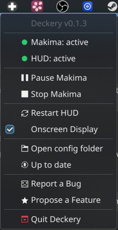

Projects
Deckery is an umbrella for several subprojects:
Deckery Projects
Deckery HUD
A live overlay showing what every button does right now. Controls should be discoverable and explain themselves — for easier onboarding and faster recall.
The HUD reads makima's state snapshot and renders the current button map as a GTK4 Layer Shell overlay. It communicates back to makima via the control socket to pause remapping while the overlay is open, so button presses show up in the preview rather than firing real actions.
Makima Deckery
The input remapper. Two goals:
- Steam independence — read raw evdev events directly, apply the config, emit keyboard/mouse events without Steam in the loop. No need to run Steam in the background to use the desktop efficiently.
- Richer control — context-aware button layouts, per-app configs, touch and scroll gestures, and automations that go beyond what Steam Input allows.
On every input event, makima writes a fully-resolved state snapshot to /tmp/makima-state.json for the HUD. The trackpads are exposed as standard uinput MT devices for libinput and gesture tools, and combined into a third virtual multi-touch device for two-finger gesture recognition.
deckery-controller
Hardware abstraction library for the Steam Deck controller. Handles everything device-specific: transparent suspend/resume reconnect, exclusive evdev grab (EVIOCGRAB), the cooperative D-Bus yield protocol that lets deckery-auth temporarily take over the controller for PIN entry, hidraw discovery, Lizard Mode suppression heartbeat, and haptic feedback encoding.
Deckery Tray
The control panel for the entire Deckery stack, living in the KDE system tray. No terminal needed for day-to-day use.

The tray icon changes colour to reflect the current system state at a glance — green when everything runs, orange when makima is paused or a service is down, red on failure, and a cyan badge when an update is available.
The menu provides:
- Live service status — colour-coded dot and state label for each service
- Pause / Resume / Restart / Stop controls for makima — context-sensitive, only the relevant action is shown
- Restart HUD and Onscreen Display toggle
- Open config folder — direct access to
~/.config/deckery/ - One-click updates — checks GitHub on startup and hourly, installs by running
get.shin a terminal window
The tray also owns the systemd service hierarchy: makima.service and deckery-hud.service are both declared PartOf=deckery-tray.service, so starting the tray starts everything and stopping it stops everything cleanly.
Steam Deck Dotfiles
An opinionated KDE Plasma desktop tuned for the Steam Deck's screen size and controller input — display scaling, window tiling, focus behaviour, power settings, and voice input, all documented and mostly scriptable. A useful starting point even if you only want to adopt one or two settings.
→ Browse the repo · Full documentation
Forked Third-Party Tools
Kyanite
KWin script for dynamic workspace management, patched for single-column vertical grid layout. Kyanite ensures there is always a free workspace available, so you never have to manage workspaces manually. Vertical spaces let you rotate around the short edge of the screen.
maximized-window-gaps
KWin script for configurable gaps around maximized windows, patched for correct behaviour on the Steam Deck screen geometry. It just looks better.
evdev (Plasma-Deckery fork)
A minimal fork of the Rust evdev crate, based on release 0.12.1, with four additional keycodes for the Steam Deck back paddles:
| Keycode | Code | Button |
|---|---|---|
BTN_GRIPL |
0x224 |
L4 (top left) |
BTN_GRIPR |
0x225 |
R4 (top right) |
BTN_GRIPL2 |
0x226 |
L5 (bottom left) |
BTN_GRIPR2 |
0x227 |
R5 (bottom right) |
These codes were contributed upstream via emberian/evdev#178, which merged in May 2026 but has not yet appeared in a crates.io release. This fork exists solely to bridge that gap — it will be retired and replaced with the upstream crate as soon as a release including these codes is available.
Third-Party Tools in Use
Kröhnkite
KWin script for dynamic window tiling. With the right config, Kröhnkite can be driven entirely by controller shortcuts via makima-deckery — toggling fullscreen, switching tiling modes, and reordering layouts without a keyboard.
OpenWhispr
On a handheld device without a physical keyboard, voice input is the practical text entry method when away from a desk. OpenWhispr is a hotkey-activated, bring-your-own-keys Whisper frontend that can also run fully locally. The steamdeck-dotfiles include an RNNoise configuration for outdoor use.
Upstream Contributions
Changes contributed back to projects Deckery builds on:
| Project | PR | Description |
|---|---|---|
| cyber-sushi/makima | #57 | Fix BTN_DPAD_* silently ignored in config |
| cyber-sushi/makima | #58 | Fix x11rb::connect panic after suspend |
| emberian/evdev | #178 | Add BTN_GRIPL/R/L2/R2 keycodes for Steam Deck back paddles |
| MurderFromMars/Kyanite | #3 | Vertical grid layout for single-column workspace switching |